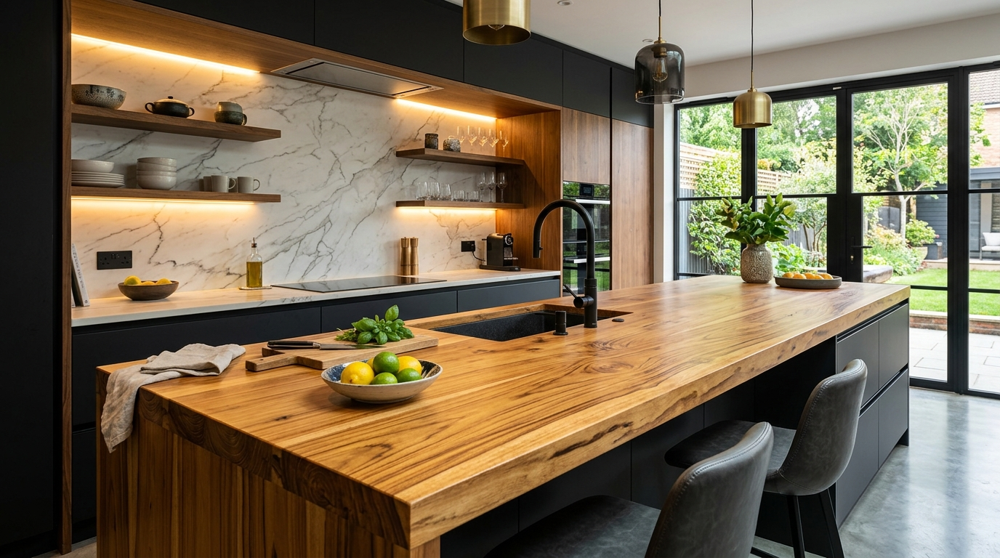
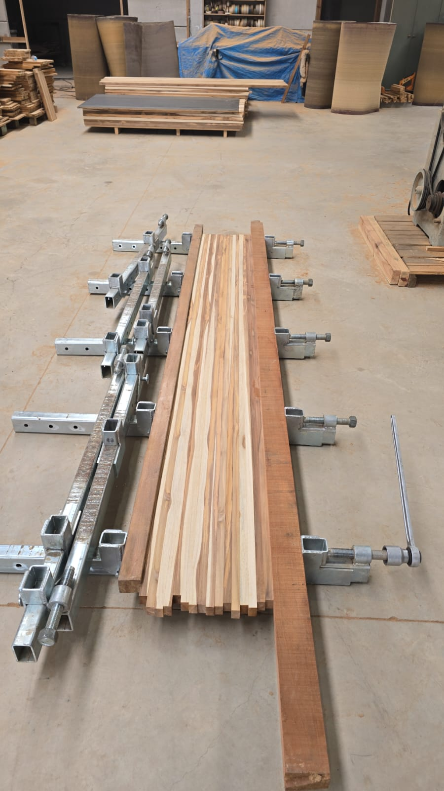
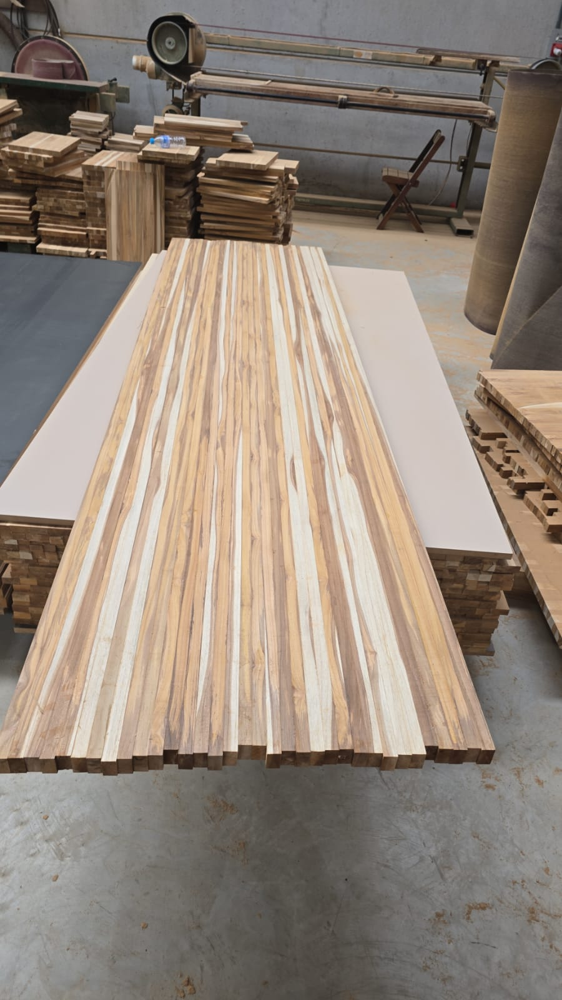

A nobreza e resistência da Madeira Teca em cada detalhe.
Fabricamos painéis maciços de teca calibrados, bancadas para cozinhas e áreas gourmet, tampos nobres e projetos sob medida. Alta estabilidade, impermeabilidade natural e acabamento de alto padrão para marcenarias, arquitetos e lares exigentes.
100%
Teca Reflorestada
Colagem D4
Resistente à Água
Sob Medida
Pronto p/ Uso

Tecnologia, Prensa & Rigor Técnico em Passo Fundo
Acompanhe o processo real dentro da nossa fábrica: desde a seleção criteriosa das réguas de madeira teca até a colagem sob alta pressão e calibração milimétrica.

Prensa EstruturalPrensagem Contínua e Alinhamento Preciso
Utilizamos prensas estruturais de múltiplos pontos de aperto com adesivo especial D4 à prova d'água. Cada régua de teca é cuidadosamente inspecionada para garantir continuidade de fibras, estabilidade e eliminação total de frestas.
- Colagem industrial D4 (norma EN 204) à prova de umidade
- Pressão homogênea distribuída em todo o comprimento
- Cura térmica controlada sem tensões internas

Calibração PerfeitaPainel Calibrado com o Desenho Único da Teca
Veja a beleza autêntica da teca: o contraste harmônico entre o cerne dourado e o alburno claro, calibrado em lixadeira de cinta larga com tolerância estrita de espessura. Pronto para receber o corte final e acabamento.
- Superfície perfeitamente plana, sem ondulações
- Padrão estético sofisticado valorizado por arquitetos
- Pronto para aplicação de óleo mineral, verniz ou selador
Soluções em Madeira Teca para Todos os Projetos
Explore nossa linha de produtos padrão e sob medida. Desde painéis brutos para profissionais da marcenaria até peças acabadas prontas para instalação.
Painel Maciço de Teca Calibrado
Painéis formados por réguas coladas longitudinalmente. Ideal para marcenarias e fabricantes de móveis que exigem pranchas estáveis, sem nós soltos e prontas para usinagem.
Bancadas para Cozinha & Gourmet
A teca é a madeira perfeita para ilhas de cozinha e bancadas de pia. Seus óleos naturais e sílica repelem líquidos, suportam respingos diários e não estufam como o MDF.

Tampos & Mesas em Teca Nobre
Mesas que transformam salas de jantar e varandas. O calor aconchegante da madeira maciça combinado com desenho elegante de veios e grande durabilidade contra riscos e uso diário.

Tábuas de Churrasco & Corte
Produzidas em teca nobre com ação antibacteriana natural. Não desgasta o fio da sua faca, conta com canaletas profundas para retenção de sucos e acabamento em óleo vegetal atóxico.

Bancadas para Banheiro & Lavabo
Ideal para cubas de sobrepor ou embutir. A teca suporta a umidade constante do banheiro sem mofar ou delaminar, agregando estética spa e aconchego ao ambiente.

Painéis Ripados & Revestimentos
Ripas de teca maciça calibradas para revestimento de paredes, painéis de TV, portas de correr e detalhes arquitetônicos com iluminação LED embutida.
Por Que a Madeira Teca é a Escolha Nº 1 no Mundo?
A Teca (Tectona grandis) é consagrada mundialmente como uma das madeiras mais nobres e resistentes já conhecidas. Descubra os diferenciais que a colocam à frente de qualquer outro material.
Impermeabilidade Natural
Possui alta concentração de óleos essenciais e sílica orgânica em suas células, o que repele a água naturalmente e impede o apodrecimento, sendo a madeira clássica da construção naval.
Não Empena Facilmente
Apresenta uma das menores taxas de contração volumétrica do reino vegetal. Mesmo sob mudanças bruscas de temperatura e umidade, o painel mantém sua estabilidade dimensional.
100% Sustentável
Toda a nossa teca é originária de reflorestamentos dedicados e manejo florestal responsável. Você agrega sofisticação e responsabilidade ambiental ao seu projeto.
Ação Antimicrobiana
A presença natural de tecoquinona inibe a proliferação de fungos, cupins e bactérias, tornando a teca o material mais higiênico para bancadas de preparo e tábuas gourmet.
Beleza Única e Nobre
O contraste expressivo entre os veios dourados do cerne e os tons amenos do alburno cria desenhos visuais que nenhuma lâmina artificial consegue reproduzir.
Durabilidade Decenal
Um móvel ou painel de teca é um investimento que dura gerações. Com simples manutenção periódica de óleo, sua superfície permanece impecável e rejuvenescida.
Simulador de Medidas & Orçamento Personalizado
Informe as medidas estimadas da sua peça. O sistema calculará a área e montará sua mensagem detalhada para atendimento direto com nossa equipe via WhatsApp.
Resumo do Pedido
*Valores calculados sob consulta técnica conforme lote, cortes especiais, aberturas para pia e frete para sua cidade.
Ambientes Transformados pela Nobreza da Teca
Clique nas fotos para ampliar e contemplar os detalhes, cortes e a harmonia da madeira teca aplicada em projetos reais.
Perguntas Frequentes sobre os Painéis de Teca
Reunimos as respostas para as principais dúvidas técnicas e comerciais de nossos clientes e parceiros marceneiros.
Sim, com total segurança! A Teca é tradicionalmente a madeira mais utilizada em deques de iates e veleiros no mundo inteiro devido à sua alta concentração natural de óleos protetores e sílica. Ela não apodrece, não estufa como compostos aglomerados e suporta respingos diários em pias de cozinha e banheiros.
Trabalhamos com espessuras padrão de 18mm, 20mm, 30mm e 40mm, e comprimentos que podem atingir até 3 metros de extensão contínua. Para projetos sob medida, calibramos pranchas com larguras e espessuras específicas conforme o projeto do seu arquiteto ou marceneiro.
Utilizamos exclusivamente adesivos industriais estruturais com classificação D4 (Norma Europeia EN 204). Trata-se de uma cola impermeável de alta tecnologia que suporta imersão e ação contínua da água sem descolamento das réguas.
Com certeza! Atendemos tanto clientes finais (que desejam a bancada pronta e acabada para instalar em casa) quanto marcenarias, marmorarias, construtoras e arquitetos que compram o painel calibrado bruto para usinar em suas próprias oficinas.
Para limpeza rotineira, basta um pano úmido com detergente neutro. Em bancadas com acabamento em óleo vegetal, recomendamos reaplicar uma fina camada de óleo mineral uma ou duas vezes ao ano com uma flanela seca. Isso mantém a cor quente, os veios contrastados e a película protetora sempre ativa.
Estamos sediados em Passo Fundo - RS e entregamos na região com logística própria ou despachamos via transportadoras parceiras com embalagem reforçada para todo o Rio Grande do Sul e demais estados.